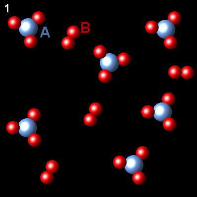
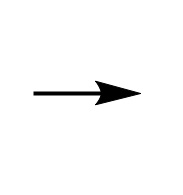

Equilibrio 2
En la figura se ha representado la evolución de un sistema gaseoso que, a temperatura constante, pasa del estado 1 (no equilibrio) al estado 2 (equlibrio)
|  |  |  |
Si los átomos de A se representan como esferas azules y los átomos de B como esferas rojas, ¿Cuál es la ecuación química que describe el proceso?
| AB3⇄AB2+B2 | INCORRECTO. Esta ecuación no cumple la
igualdad de masa en ambos miembros.
|
| 6AB3⇄4AB2+6B2 | INCORRECTO. Esta ecuación no cumple la
igualdad de masa en ambos miembros.
|
| 3AB3⇄2AB2+3B2 | INCORRECTO Esta ecuación no cumple la
igualdad de masa en ambos miembros.
|
| 2AB3⇄2AB2+B2 | CORRECTO. Dos moléculas de AB3 se transforman en
dos de AB2 y una de B2. Observad que es la única ecuación química ajustada.
|
Pregunta siguiente: Si el proceso se ha realizado a presión y temperatura constantes ¿cuál será el volumen final del reactor en función del volumen inicial Vi?